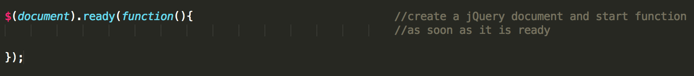
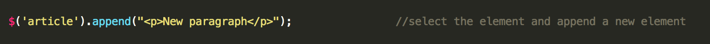
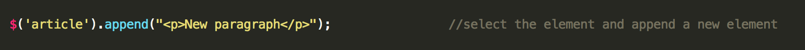

I ♥ jQuery & AJAX
It's magic
DOM Manipulation
You start by including the jQuery library into your project and then creating a jQuery object.
After that you have acces to easy to use selectors and a lot of methods to find and manipulate elements from the DOM. Let's start with adding an element to de DOM.
 


Compatible
Working in modern and old browsers too! IE 8 users don't have the fault of using that horrible browser! Lets give them a chance to see your site in a proper way!
Example
HTML markup example to define 4 sections.

Working On Tablets
Designed to fit to different screen sizes as well as tablet and mobile devices.